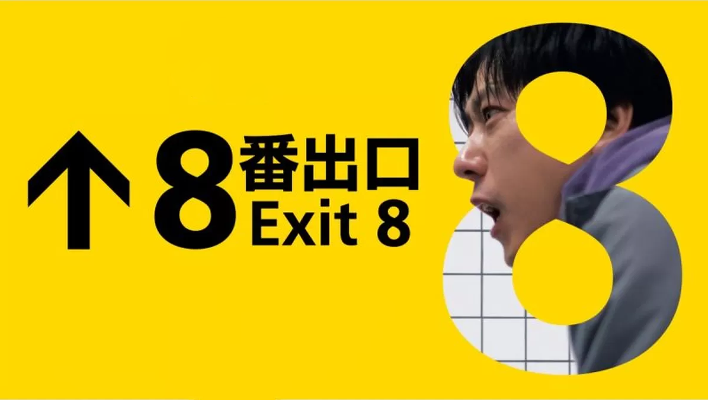

Exit 8 (2025)
8番出口

Dirimu berjalan melalui lorong bawah tanah putih yang tak berwujud, diterangi lampu neon. Namun, kamu tidak bisa mencapai pintu keluar meskipun waktu terus berlalu. Kamu merasa ada yang aneh dengan pria berjas yang berulang kali melewatimu, dan akhirnya kamu menyadari bahwa kamu berjalan melalui lorong bawah tanah yang sama berulang kali. Kemudian menemukan panduan misterius yang ditempel di dinding. "Jangan sampai melewatkan kejanggalan.", "Saat menemukan kejanggalan segeralah berbalik.", "Kalau tidak menemukan kejanggalan jangan berbalik.", "Bisa keluar melalui pintu keluar nomer 8.".
Jika ada kejanggalan di lorong, berbaliklah ke arah yang berlawanan, jika tidak ada, teruslah maju. "Pintu Keluar 1", "Pintu Keluar 2", "Pintu Keluar 3"... Jika benar, kamu akan mendekati "Pintu Keluar 8", tetapi jika salah satu, akan kembali ke "Pintu Keluar 0" mulai dari awal. Akankah kamu mampu melarikan diri dari koridor tak berujung tempatmu tiba-tiba tersesat?